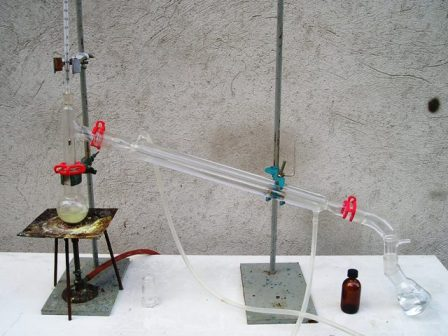

Qualche pagina indietro si parlava di puzzole... Perchè non tentare ancora (come abbiamo fatto per esempio nel caso della profumata Gaulteria) di imitare un pochino la natura? Ecco allora che la mia mania delle sostanze odorose ha preso ancora il sopravvento, inducendomi a provare a sintetizzare il 1-butantiolo, per sentire se è veramente puzzolente come dicono...
Abbiamo tutto ciò che serve? Accidenti, ci manca il sodio solfidrato, NaHS!
Andiamo a farne subito una quindicina di grammi anche di questo, altrimenti niente puzzole in lab!
Via, fuori tutto, reagenti e vetreria, oggi s'impone tassativamente di lavorare all'aperto, dall'inizio alla fine!
Materiali occorrenti:
Sodio solfuro Na2S
HCl, NaOH
Bromuro di n-butile CH3-(CH2)3-Br
Apparato di distillazione (Liebig e Allhin)
Imbuto separatore
Vetreria varia
Fase 1: sodio solfidrato NaHS
In un imbuto separatore porre 120 ml di HCl conc. e 100 ml di acqua.
Far gocciolare la sol. in un pallone a doppio collo da 250 ml contenente 50 g di Na2S anidro. Si generano circa 15 litri di H2S, che vengono condotti al fondo di un cilindro graduato contenente una soluzione di 20gr di NaOH in 100cc di acqua.
Aggiungere lentamente l'HCl al solfuro, in modo che la generazione di H2S sia regolare e non tumultuosa. Sottolineo la tossicità dell'acido solfidrico, fare all'aperto!
Una volta terminato l'assorbimento, il prodotto viene faticosamente evaporato fino a condurre ad un solido incoloro (NaHS) che facilmente ingiallisce (molto igroscopico!).
La resa dovrebbe essere sui 27 g, ma non sono arrivato al prodotto perfettamente secco e la resa è stata circa la metà (ho voluto eliminare l'eccesso di NaOH per parziale decantazione ed eliminazione delle acque madri).
NaOH + H2S --> NaHS + H2O
Fase 2: butantiolo CH3-(CH2)3-SH
CH3-(CH2)3-Br + NaHS --> CH3-(CH2)3-SH + NaBr
Porre il solfidrato NaHS prima ottenuto in 30 ml di etanolo in un palloncino da 100 ml e aggiungere 5 ml (6,5 g) di 1-butilbromuro, agitare e predisporre il sistema con refrigerante a ricadere. Portare a lento riflusso per almeno due ore.
La sospensione, bianca inizialmente, è alla fine leggermente giallina, con abbondante fase solida sul fondo.
Predisporre a questo punto per la distillazione, curando la perfetta tenuta di tutti i giunti (silicone), con la beuta di raccolta anch'essa ben raccordata alla fine del Liebig.
Con queste precauzioni si riesce (forse...) a non ammorbare l'ambiente se per sciagurata idea avessimo fatto l'esperienza magari in garage...
Distillare scartando prima l'alcool in eccesso (anch'esso puzzolente ma troppo diluito), raccogliendo ciò che passa tra 90° e 110°.
Non ho provveduto a rettificare i circa 5 ml di prodotto (ancora diluito, anche se efficace nelle sue caratteristiche, perchè sarei rimasto con troppo poco).
Il 1-butantiolo puro ha d. 0,83 e p.e. 98°.


Osservazioni
La sintesi, se non si ha il NaHS, è fastidiosa nella prima fase, quando occorre produrre l'idrogeno solforato e farlo gorgogliare nel NaOH; la seconda fase è facile ma la resa è scarsa, anche se sufficiente per lo scopo previsto.
Alla fine il 1-butantiolo (non puro, che non era nei fini di questo lavoro) si presenta come un liquido limpido leggermente giallino, di odore ributtante.
Ne basta veramente una traccia per sentirlo nell'ambiente, tant'è che si usa in quantità infinitesimali per dare l'odore al gas combustibile e rilevarne così eventuali perdite pericolose.
Il Merck Index dice che il n-butyl mercaptan è "heavy skunk odor": io le puzzole le ho viste solo in fotografia, ma almeno mi sono fatto un'idea del loro olezzo di difesa.
La foto mostra una fase della procedura, fatta all'aperto su un banchetto di fortuna; nonostante l'immersione nella natura, nel raggio di una decina di metri si avvertiva che la sintesi in corso era "diversa" dalle altre...